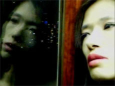

|
SPYDER
Ishibashi Kiyomi | J 2009 | 115 min.
Material : DV
Format: DVCam
Original language: Japanese
Script: Ishibashi Kiyomi
Story: Thierry Acot-Mirande
Camera
: Ishibashi Kiyomi
Sound: Ishibashi Kiyomi
Editing: Ishibashi Kiyomi
With Ishibashi Kiyomi, Yan Kassile, Matsuda Tokue, Koshida Noriko u.a.
Production: Ishibashi Kiyomi
Print/Sales : Ishibashi Kiyomi
German Premiere
Spyder, - 'Spy' with a connotation of secret agent, not a suggestion of the homonymous insect-, is a young woman with a vagabond soul. She lives her life as if she is part of a flood pouring out from space. She experiences diverse levels of reality, between heaven and hell, ecstasy and horror, discovering the world of cinema and her first love. She strives to realize the dream to have her own house, an incarnation of the memories of her lost childhood. However, the distortion of reality is a part of her troubled personality, though it has nothing to do with drugs. But for her, the world that surrounds us all begins to become a sort of nightmare. The reasons for this are manifold, including the problems of modernity…
Ishibashi Kiyomi, born in 1975 in Hiroshima, Japan, obtained her master degree at the University of Tokyo and got her diploma of Ph D in Cinematographic and Audiovisual Studies at the Sorbonne in Paris. She is currently working as researcher and assistant professor at the Tokyo University of Technology. She also is a film critic, among others for Cahiers du cinéma and Marie Claire Japan. Spyder is her first feature length film.
Films: Silent Scream 2007 | Spyder 2009
back
|